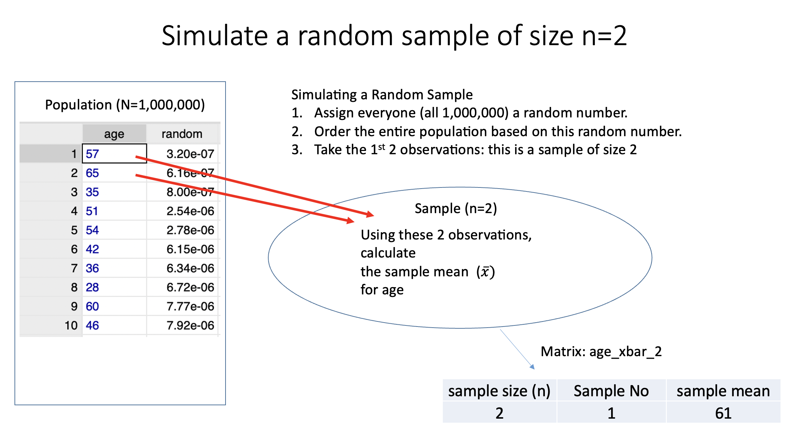
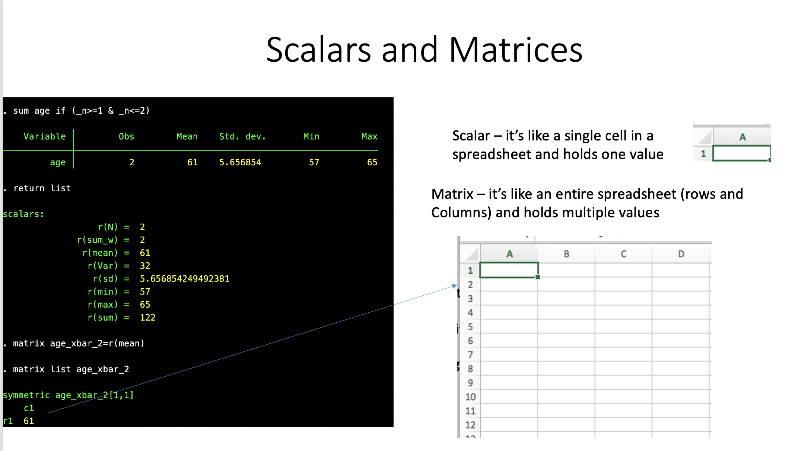
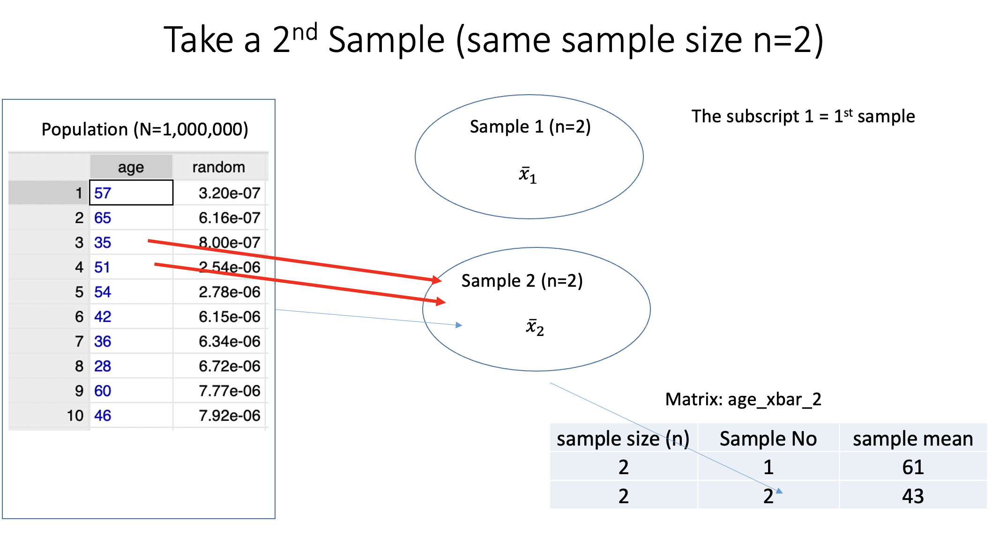
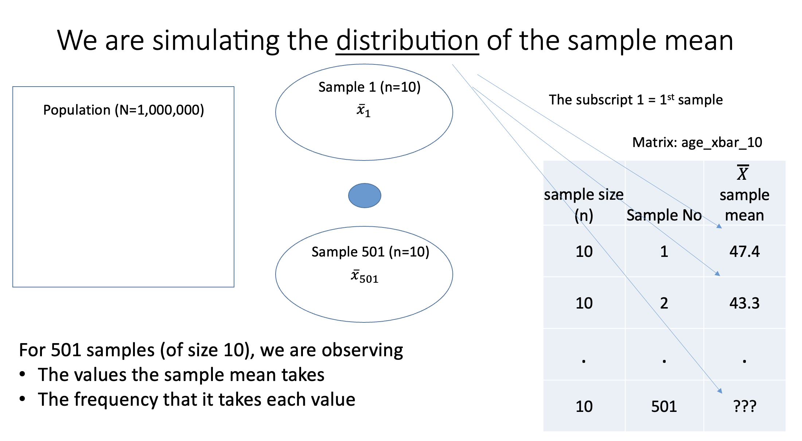

** Set Path **
cd "/Users/egong@middlebury.edu/Library/CloudStorage/Dropbox/Middlebury/Course_Archieve/Spring_2026/ECON_0111/2_Assignments/Labs/Lab_4"ECON 111 - Lab 4 : Simulations II
Central Limit Theorem
Preliminaries
Before beginning this lab, make sure you’ve:
Created a folder “Lab 4”
Downloaded the necessary data into the folder from the course site
quietly cd "/Users/egong@middlebury.edu/Library/CloudStorage/Dropbox/Middlebury/Course_Archieve/Spring_2026/ECON_0111/2_Assignments/Labs/Lab_4"Dataset as the Population
The dataset for this lab is “Population_IPUMS.dta”. It has 1,000,000 individual observations from the 2022 American Community Survey (IPUMS USA), with variables including: age (25-65 years), annual wage income (in dollars), hours worked, and employment status. Normally, datasets are typically “samples” from a population, but in this simulation, the dataset is the population.
use "Population_IPUMS.dta", clear
des
sum
Contains data from Population_IPUMS.dta
Observations: 1,000,000
Variables: 4 11 Feb 2026 20:55
-------------------------------------------------------------------------------
Variable Storage Display Value
name type format label Variable label
-------------------------------------------------------------------------------
age byte %8.0g AGE Age in years
hours float %9.0g Usual hours worked per week
wage float %9.0g Wage and salary income (annual,
in dollars)
unemployed float %10.0g Unemployed (1=Yes, 0=No)
-------------------------------------------------------------------------------
Sorted by:
Variable | Obs Mean Std. dev. Min Max
-------------+---------------------------------------------------------
age | 1,000,000 44.43972 11.59152 25 65
hours | 1,000,000 40.63717 10.79503 1 98
wage | 1,000,000 71443.22 79763.2 4 791000
unemployed | 1,000,000 .016847 .1286981 0 1Population Distributions
histogram age, discrete
histogram wage
histogram hoursQ1: Which of the distributions approximate the normal distribution?
Simulation: Random Sampling
Stata’s random-number generation functions, do not really produce random numbers. These functions are deterministic algorithms that produce numbers that can pass for random. set seed # specifies the initial value of the random-number seed. Whatever you do after setting the seed, if you set the seed to the same value and repeat what you did, you will obtain the same results. This is important with simulations - if we want the exact same results (problem set, exam) we need to set the seed to a specific number.
set seed 210To generate a random sample, we will assign each individual in the dataset a random number between 0 and 1. We will then sort the dataset by this random number. Why? This simulates a random sample.
gen random = runiform()
* browse
** Look at random column **
sort random
* browse
** Now look at random column **Let’s take a random sample of size 2 (n=2). A random sample is simulated by selecting observations beginning at the top of the dataset AFTER we sorted by the random number. This is a visualization of the simulation:

In STATA, let’s calculate the sample mean for age for this sample of n=2.
sum age if (_n>=1 & _n<=2)
Variable | Obs Mean Std. dev. Min Max
-------------+---------------------------------------------------------
age | 2 61 5.656854 57 65We also want to record this sample mean. Imagine there’s a spreadsheet in STATA that can record our results. We first need to find where the result is stored (the sample mean). We then take this stored valued and add it to a matrix (spreadsheet).
return list shows that the results in STATA are saved in scalars (think of a single cell on a spreadsheet). matrix generates a spreadsheet where we can insert the saved result.
sum age if (_n>=1 & _n<=2)
return list
matrix age_xbar_2=r(mean)
matrix list age_xbar_2
Variable | Obs Mean Std. dev. Min Max
-------------+---------------------------------------------------------
age | 2 61 5.656854 57 65
scalars:
r(N) = 2
r(sum_w) = 2
r(mean) = 61
r(Var) = 32
r(sd) = 5.656854249492381
r(min) = 57
r(max) = 65
r(sum) = 122
symmetric age_xbar_2[1,1]
c1
r1 61We see that the sample mean for age is saved in r(mean). We then create a matrix “age_xbar_2” to keep this saved result.

If we wanted to take a second sample (n=2), it would look like this:

And in STATA, we do the following:
sum age if (_n>=3 & _n<=4)
matrix age_xbar_2=age_xbar_2 \ r(mean)
matrix list age_xbar_2
Variable | Obs Mean Std. dev. Min Max
-------------+---------------------------------------------------------
age | 2 43 11.31371 35 51
age_xbar_2[2,1]
c1
r1 61
r2 43Q2 How is the code different between the first sample and the second sample? and why?
Q3 How is this simulation similar to the card simulation we did in class?
Q4 How would we take a random sample of n=10? You can start with the first observation. For the matrix name use “age_xbar_10”.
Simulation: Repeated Samples
Q5: We now want to take 500 repeated samples of the same size (n=10). Here are code snippets for the loop, can put them in the right order? Predict what the loop will do (write it down) and then execute it.
}
matrix age_xbar_10 = age_xbar_10 \ r(mean)
sum age if (_n>`i' & _n<=`i'+10)
forvalues i = 10(10)5000 {Here’s a visualization of what the loop above is doing and what we are simulating.

Finally, let’s look at the distribution of the sample mean. First look at the matrix you created matrix list age_xbar_10. We want to generate a histogram using these sample means. We first must input the matrix into a dataset using svmat
matrix dir
svmat age_xbar_10
** now look at the last column of the dataset **
browseThe last column is a variable “age_xbar_101”. It refers to the matrix that was converted into data and the “1” at the end refers to the first column of the matrix.
Now we can look at the distribution of the sample mean of age where n=10.
sum age_xbar_101Q6: How does the mean of the distribution of the sample mean compare to the population mean for age? Why are the standard deviations different?
Q7: What does the distribution for the sample mean look like? How does this compare to the population distribution? Which theorem are we simulating? Why is this so amazing?
Q8: How do you think the sample mean distribution will look like if we increase the sample size to n=100? Can you run 500 simulations of n=100 to see how it looks?
Bonus Material: Other Sample Statistics
Remember, that other sample statistics are also random variables. The way to think about it is that prior to sampling (collecting the data), statistics such as the median, variance, standard deviation, min, and max are unknown, but they will take a numerical outcome.
To look at other sample statistics, you first need to set the sample size (n).
Let’s use a sample size n=150 for age.
sum age if (_n>=1 & _n<=150)
return list
Variable | Obs Mean Std. dev. Min Max
-------------+---------------------------------------------------------
age | 150 46.01333 10.76284 26 65
scalars:
r(N) = 150
r(sum_w) = 150
r(mean) = 46.01333333333334
r(Var) = 115.8387472035794
r(sd) = 10.76284103773624
r(min) = 26
r(max) = 65
r(sum) = 6902To evaluate any of the other sample statistics, simply use one of the scalars r(.). For example, if we wanted to use the variance we would use r(Var) and for the max we use r(max).
Here’s an example of setting up a matrix that captures the standard deviation.
sum age if (_n>=1 & _n<=150)
return list
matrix age_sd_150=r(sd)
matrix list age_sd_150
Variable | Obs Mean Std. dev. Min Max
-------------+---------------------------------------------------------
age | 150 46.01333 10.76284 26 65
scalars:
r(N) = 150
r(sum_w) = 150
r(mean) = 46.01333333333334
r(Var) = 115.8387472035794
r(sd) = 10.76284103773624
r(min) = 26
r(max) = 65
r(sum) = 6902
symmetric age_sd_150[1,1]
c1
r1 10.762841Now you can simulate the distribution for the standard deviation (where n=150), following the code above.